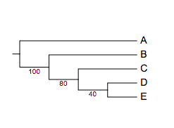
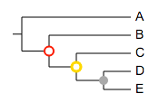

Version history
What's new
April 2021
- New dataset import options. Now Evolview supports Drag and drop action which can also detect tree files and dataset files partially.
- Focus mode for the Evolview. The focus mode can take the web browser to a full window mode hiding all parts of the screen ,showing only the tool bar and canvas section for dedicated tree editing and design.
Feb 2021
- Complete user interface redesign. Implementation of material theme thought the website and for user controls.
- Redesign SVG JS icons for the newly implemented material theme
- New Tree share function: Embed Evolview tree and canvas anywhere. This function helps the users with embedding the evolview tree canvas along with datasets into any website using the iframe protocol from HTML.
January 2021
Bug fixing and minor updates to some of the backend functions to improve the usability.
December 2020
- The new user guide has been developed and setup using MKdocs.
- Social login plugin was included with the latest update.
- new examples for the new datasets have been included into the online version.
November 2020
New dataset types and some minor bug updates have been done.
- Support Gene synteny dataset type.
October 2020
New dataset types have been created for the tree visualizations:
- Options to modify the brach type dashed/modify individual branch line width and along with color
- New branch label annotation is included with this update

- new label annotation types have been included supporting multiple styles of visualizations.
- Support to insert images besides the leaf label.
August 2020
- The data management window has been redesigned with user options to download and manage their data.
- The tree dataset control window on the right has been redesigned as an draggable and resizable window.
- The error reporting has been improved and user can know more about the issues in their data format with new improved dialogue system.
- This update also include some bug fixings.
July 2020
A test version based on JS has been brought online in js.evolgenius.info domain for initial testing.
Feb 2020
Javascript based The version 4 development was started. New version includes interesting features and updates.
May 2019
The version 3 accepted by NAR and published in may 22,2019 issue.
November 1,2018
*New version with updated user nterface is online. Update includes:
- New dataset visualization charts included
- New updated user intercae with re-designed user data managaement section
- Improved and updated user help pages with search functionality to assist users
- Evolview domains fully secured with HTTPS certificates
- Evolview v2 moved to newer domain to provide assestance to the users for easy trancision.
May 4, 2018
- re-enabled support for the lastest version of Firefox (ver 59)
- updated GWT to ver2.8.2, lib-svg-gwt to ver0.5.15;
Feb 03, 2018
- for batplot, users now can use modifier '!RowDataReorder' to change the display order of the stacked bars according to their corresponding values in either ascending or descending orders. See here for more details.
Let's see some examples. First, the tree:
(A:0.1,(B:0.2,(C:0.3,D:0.4)100:0.05)100:0.1)90:0.43;
example 1, the default barplot:
!groups group 1,group 2,group 3
!colors #028482,#7ABA7A,#B76EB8
!title barplot with data shown
!fan
!itemHeightPCT 80
!plotWidth 150
### last modified: sep 28, 2014
!showData
!showDataFontSize 10
!showDataFontColor white
!showDataTextAlign start
A 8,13,5
B 10,20,7
C 8,9,7
D 20,5,20
example 2, barplot with row data re-ordered in ascending order.
!groups group 1,group 2,group 3
!colors #028482,#7ABA7A,#B76EB8
!title barplot with data shown
!fan
!itemHeightPCT 80
!plotWidth 150
## -- new modifier here!!!
!RowDataReorder asc
### last modified: sep 28, 2014
!showData
!showDataFontSize 10
!showDataFontColor white
!showDataTextAlign start
A 8,13,5
B 10,20,7
C 8,9,7
D 20,5,20
example 3, barplot with row data re-ordered in descending order.
!groups group 1,group 2,group 3
!colors #028482,#7ABA7A,#B76EB8
!title barplot with data shown
!fan
!itemHeightPCT 80
!plotWidth 150
## -- new modifier here!!!
!RowDataReorder desc
### last modified: sep 28, 2014
!showData
!showDataFontSize 10
!showDataFontColor white
!showDataTextAlign start
A 8,13,5
B 10,20,7
C 8,9,7
D 20,5,20
June~Aug, 2017
- added HTML mode;
- the documentation is to be written.
July 17, 2017
- bug fixes as always
- fixed an issue that leaf label background overlaps with group labels of style 1
- fixed an issue that the background box is smaller than the leaf label; also improved cross-browser compatibility on this issue
July 11, 2017
- our documentation has been moved to GitHub!!!
Long-time users may still remember that Evolview documentation was originally hosted at Google Code, then was moved to MicroSoft CodePlex. This may never happen but let us hope that we do NOT have to move again!!!
Jan 19, 2017
- use '!colorRecycle' modifier to stop recycling colors in "Color shapes and strips" plot.
For example by default colors will be recycled:
The tree:
(chicken,((mouse,rat),(chimp,human)));
##color strips
!type strip,rect,circle,star,check,triangle
!showlegends 1
!defaultstrokewidth 2
!plotwidth 200
!colorRecycle 1
## let the data begin
mouse pink,red,green,blue:brighter
chicken yellow,purple,white:darkred,lightgreen:darker
## -- two objects will be plotted instead of six --
rat lightblue,white:lightblue
chimp grey,darkgreen:brighter,grey:darker,pink:darker
human orange,red,white:gold,lightblue

However, set '!recycleColor' or '!colorRecycle' to 0 will stop cycling the colors:
##color strips
!type strip,rect,circle,star,check,triangle
!showlegends 1
!defaultstrokewidth 2
!plotwidth 200
## -- recycle color, default is true --
## -- !type determines that maximally six objects will be displayed
## -- normally user-supplied colors will be recycled; for example,
## -- however, when !recycleColor is set to 0, the colors will not be recycled
!colorRecycle 0
## let the data begin
mouse pink,red,green,blue:brighter
chicken yellow,purple,white:darkred,lightgreen:darker
## -- two objects will be plotted instead of six --
rat lightblue,white:lightblue
chimp grey,darkgreen:brighter,grey:darker,pink:darker
human orange,red,white:gold,lightblue
Dec 29, 2016
- bug fixes
- fixed a bug that the header disappeared in Mac Safari
Nov 2, 2016
- bug fixes
- fixed a bug that exporting to PDF fails on some circular group labels
Aug 25, 2016
- bug fixes
- fixed a bug that the exporting to png/jpeg/tiff functionality fails from time to time
May 25, 2016
- bug fixes as always
- added support for two additional tree visualisation styles that can be used in combination with phylograms and cladograms. See here for more information.
Here is an example: 1. the original tree:
- in combination with style 1:
- in combination with style 2:

To turn on/off the new visualisation styles, use the corresponding icons on the Toolbar (as shown below):
May 22, 2016;
- bug fixes
May 20, 2016
- bug fixes as always
- added support for a new bootstrap value style
here is the tree:
(A:0.1,(B:0.2,(C:0.3,(D:0.4,E:0.5)40:0.6)80:0.05)100:0.1)90:0.43;
the dataset:
## place=4
!bootstrapValueStyle show=1,style=numeric,place=4,color=darkred
and the visualisation results:

May 19, 2016
- added support for multiple sets of bootstrap values; here is an example:

See here for more information and examples.
May 18, 2016
- added a new annotation type: TimeLine; here is an example:
See here for more information and examples.
Mar 1, 2016
- bug fixes as always ...
- allow user to copy datasets from one tree to others
Feb 19, 2016
- updated user interface for tree sharing
Feb 3, 2016
- bug fixes
- fixed a bug that the charts are not updated after the leaf labels are switched on/off
Jan 29, 2016
- now Evolview is equipped with a "CodeMirror"-powered text-editor that features:
- line numbers
- current row highlight
- keywords highlight
See the screenshot below:
Jan 28, 2016
- use scientific numbers as branch lengths
Float numbers less than 0.0001 (1e-4; non-inclusive) will be displayed as scientific numbers. For example, the tree:
(A:0.0001,(B:0.00002,(C:0.000003,D:0.000004)100:0.05)100:0.1)90:0.43;
will be visualised as:
In addition, branch lengths can be directly written as scientific numbers. For example, the following tree will be correctly parsed and visualised:
(A:1e-2,(B:0.00002,(C:0.000003,D:1.45e-5)100:0.05)100:0.1)90:0.43;
Jan 26, 2016
- bug fixes
- fixed an issue caused by Google Chrome ver 48+
- datasets for 'Bootstrap value style' can only be uploaded for trees with bootstrap values (of course)
- fixed an issue that causes blank page in certain browsers after the deployment of a new version
Jan 20, 2016
- added support for collapsing at internal nodes; with this annotation type, users can :
- collapse at internal nodes
- show a small triangle at the collapsed nodes that is proportional to the number of leaves that the collapsed node contains
Here is an example:
See here for more information and examples.
Jan 14, 2016
- now Evolview can correctly parse and display parentheses in leaf node names. As long as they come in pairs, parentheses can be put at anywhere (start, end, middle) of the leaf name; multiple and nested parentheses in a single leaf name are also supported.
For example, the tree below:
( ( (
(A)(NC_1)B(C):0.4,
((B)B_(NC_2)):0.3)90:0.2,
(
C_(NC_3):0.1,
(D_(NC_4)):0.001)75:0.2 )90:0.3,
E_(NC_5)_E:0.44 )100:0.3;
will be visualised as:
Dec 6, 2015
- added a new type anntation dataset: Column plots, it allow users to visualise complex summary information of species in a phylogenetic tree, here is an example:
See here for more information.
Dec 5, 2015
- added support for the use of 'darker' or 'brighter' as stroke colors, see the section 'Stroke color and width' and related sections in the annotation datasets.
for example: * green:darker == use darker green as stroke color; the stroke color is usually 20% darker than the specified color * purple:ligher or purple:brighter == use lighter purple as stroke color; the stroke color will be 20% brighter than the specific color
Here are some examples:
Dec 4, 2015
- added a new type of annotation dataset: bootstrap value styles, it allows users to change the
- visiblity
- color
- size
- style / shape and
- position of the bootstrap scores according to their
- values, e.g. 40, or
- value ranges, e.g. 10~60
see here for detail.
Here are some examples:


Dec 1, 2015
- added a new modifier '!columLabelStyle' to allow user to customize the column labels for dotplot and heatmap, below is an example:
Nov 30, 2015
- bug fixes as usual
- added a new option 'valuesToHide' for modifier !showDataValue of the dot plots; below is an example; see here for more information: values to hide
April 4, 2015
- bug fixes as always
- added a new annotation type, heatmap:
March 31, 2015
- bug fixes (there are always bugs somewhere ... )
- added a new annotation type: dot plot; here is an example:
March 24, 2015
- bug fixes
- updated the pfam domain api
- added four more styles for group labels; See here for the documentation.
- added two more example trees to the 'DEMOS' project to showcase the group labels
Jan 2, 2015
- fixed a bug in tree sharing caused by case-sensitive setting of MySQL at the server-end
Dec 15, 2014
- a major update has just been released, with a new feature that allows users to share trees to others to view, interact and even edit. See here for the documentation.
- NOTE: this function is still under development; bugs are thus expected. Please send us feature requests, comments and suggestions!!
Dec 15, 2014
- added support for a new type of annotation: Group Labels; here is an example:
Oct 9, 2014
- bug fixes
Oct 1, 2014
- fixed a UI bug that the UI behaves differently between firefox and google chrome.
Sep 28, 2014
- added support for the display of data values in pie and bar charts; see trees 'yeast duplicates' and 'bars' in the "DEMOS" project.

Sep 23, 2014
- added a new button "show /hide lines linking leaf labels and datasets" to the "Basic" tab; mouse over this icon to see larger image for more details.
July 4, 2014
- bug fix
June 23, 2014
- added rotate subtree at internal nodes
June 20, 2014
- bug fix: fixed a bug that the tree panel doesn't show properly in Firefox
June 18, 2014
- added support for navigation (beta)
- added a new modifier 'toroot' for branch colors; see here for examples
April 2, 2014
- now Firefox is officially back!! Enjoy!!
March 27, 2014
- new features:
- add support for stroke colour and stroke width; see here for more details
- add a new dataset type : Leaf label decorations
Sep 11, 2013
- fix a bug with trees that have bootstrap values but no branch lengths : ((a,b)0.88,(c,d)0.99);
- new features:
- (beta) social login: now evolview supports OAuth 2.0, an open standard for authorization; users can login with existing accounts including Facebook, Gmail, Windows Live, Yahoo and many others. See here for more information about OAuth: http://en.wikipedia.org/wiki/OAuth
- now users can set the fonts of bootstrap or branch length values to italic and change their sizes; all changes will be saved on to the server
April 18, 2013
- fix a bug caused by tree like this '((a:1,b):3,(c:1,(d:1,e:3):1):2);'
- new features:
- temporary users can save their trees, projects and datasets on our server up to 7 days and the keys for accessing the data are saved in browser cookies (clearing the browser cookies will lose the keys) (Note: each temporary use would have a unique ID, she / he can use it to retrieve their data by emailing it to the server administrator )
- when creating a new account, temporary uses can choose to move their data to the newly created account
May 22, 2012
- manuscript accepted for publication on NAR 2012 Web Server issue. Check it out on the publisher's website: http://nar.oxfordjournals.org/content/40/W1/W569
Build# 510; May 15, 2012
- add visualisation for protein domains
- add automatic annotation for protein domains using tree leaf label names to query against PFAM database
Build# 500; May 12, 2012
- fix a bug on parsing the bootstrap scores in newick format
- fix some usability issues
Build# 450; Apr 23, 2012
- improvement on pie-chars: now user can specify whether to use the summation of a row as the area of a pie, or the radius
- now each plotmode/ treemode has independent translateX, Y as well as pixal per width values; and all these values will be saved on our server if a user is logged in
- fix a bug on parsing the bootstrap scores in PhyloXML format
Build# 412; Feb 14, 2012
- fix several bugs on submitting datasets to trees;
- fix a bug on parsing "legend"-related information from datasets
Build# 400; Feb 2, 2012
- the last active tree will be loaded automatically when sign in; however, if the last active tree is in project "DEMOS", no tree will be loaded
- better compatibility (import/ export) with the following formats: nexus, phyloXML; better support for internal branches from imported trees
- new download popup panel
Build# 380; Jan 17, 2012
- zoom in and out at the mouse pointer
- fix a bug at parsing trees in PhyloXML format
- add statistics on users' visits per month (click the EvolView logo at the login page to view the statistics)
- add more interactivity with the tree branches
Build# 200; milestone 1; Dec 28, 2012
- first version available online
- manuscript submitted to NAR web server issue 2012